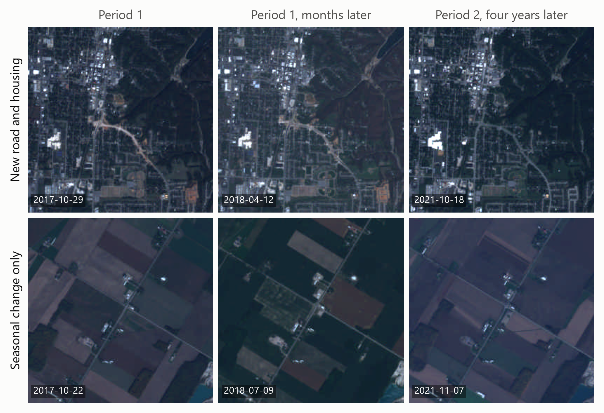
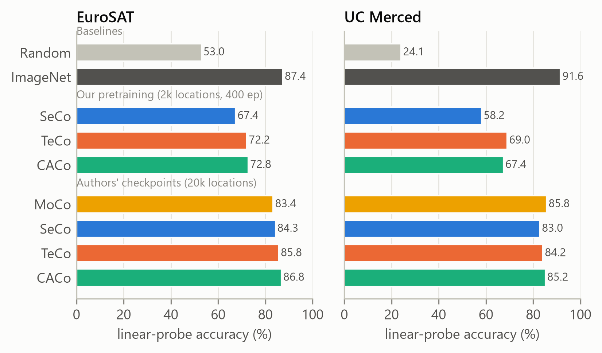
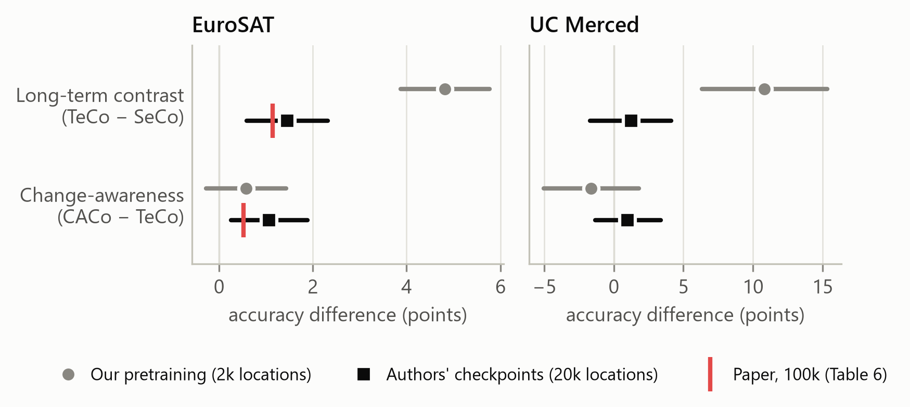
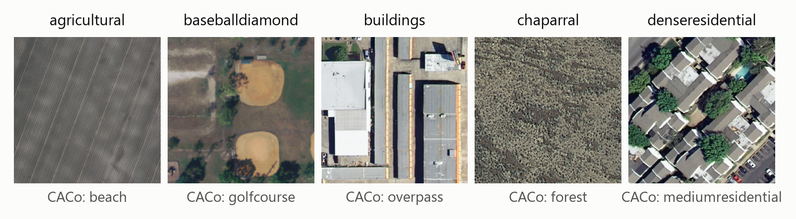
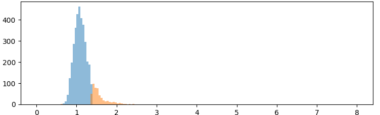

Introduction
Satellites image every place on Earth every few days, but almost none of it is labelled. Self-supervised pretraining can turn this archive into features for land-cover mapping and change detection.
CACo uses time as supervision. Images of a place months apart should look the same (seasons). Images four years apart are meant to be pushed apart only if the place really changed, which CACo estimates during training.
Methodology

Four objectives, one codebase
| Objective | Images years apart are… | Steps |
|---|---|---|
| MoCo v2 | not used (two augmentations) | 31,200 |
| SeCo | sometimes positives (dates span both periods) | 2,800 |
| TeCo | always negatives | 6,000 |
| CACo | negatives, masked where unchanged | 6,000 |
- ResNet-18, MoCo v2 framework, 400 epochs, batch 256, the authors' code; 47 GPU-hours.
- Evaluation: 9 frozen encoders (ours, the authors' 20k-location checkpoints, ImageNet, random) × 2 datasets; linear probe, 5 seeds, paired bootstrap.
Results

Ablation: what each component buys

What the paper doesn't tell you
- Equal epochs ≠ equal training. TeCo/CACo get 2× SeCo's optimizer steps, in our runs and in the released checkpoints.
- Probe protocol moves numbers. Changing the probe protocol (normalization, BatchNorm handling, batch size) shifts the same checkpoints by up to 8.7 points and moves ImageNet above or below them.
- CACo ≠ TeCo + mask. The mask removes one of three long-term negatives in two of three subspaces, and CACo also samples dates differently.
Claim check
| Paper claim (EuroSAT unless noted) | Ours | Verdict |
|---|---|---|
| CACo beats SeCo (+1.66) | +2.51 | Holds |
| Long-term, then change-aware, each add accuracy (H1) | +1.45, +1.06 | Holds |
| Beats MoCo v2 (H2) | CACo +3.46 | Partly |
| Beats ImageNet | −0.61 (n.s.) | No |
| BigEarthNet (MLP probe): CACo > SeCo, ImageNet | > SeCo only | Partly |
Stress test: aerial imagery
On UC Merced (0.3 m/pixel) ImageNet features lead every satellite encoder. The lead over the best released checkpoint grows from 0.6 points on EuroSAT to 5.9.

CACo's change estimate

Discussion
Lessons. Controls matter as much as models: match compute, fix one evaluation protocol, include MoCo v2 and ImageNet baselines.
Limitations & next. One pretraining run per objective at 2k locations. Next: step-matched training, OSCD change detection, a soft change mask.